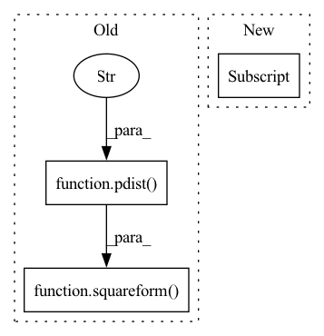

Pattern ID :7668
Before Change
// compute the gradient of the cost function
// with respect to A
xij = squareform(pdist( X, "euclidean" ) )
set_trace()
return cost, grad
After Change
diff = X[i] - X
p = p_ij[i]
outer_sum1 += (p_i[i] * np.einsum("i,ij,ik->jk", p, diff, diff))
p = p_ij_mask[i]
outer_sum2 += np.einsum("i,ij,ik->jk", p, diff, diff)
grad = 2 * A @ (outer_sum1 - outer_sum2)
return loss, grad.ravel()In pattern: SUPERPATTERN
Frequency: 3
Non-data size: 3
Instances Fragment ID: 25433556
Project Name: kevinzakka/torchnca
Commit Name: 32ad8306d3e4c09b74456cc5a1788f8b7971f7e4
Time: 2020-01-26
Author: kevinarmandzakka@gmail.com
File Name: nca.py
M Class Name: NCA
N Class Name: NCA
M Method Name: _objective_func(5)
N Method Name: _objective_func(5)
M Parent Class:
N Parent Class:
M File Name: nca.py
N File Name: nca.py
M Start Line: 54
M End Line: 83
N Start Line: 58
N End Line: 102
Before Change
prod = A @ X
// compute pairwise Euclidean distances
distances = squareform(pdist( prod.T, "euclidean" ) )
// compute probas defined by softmax over distances
probas = self._softmax(distances)
np.fill_diagonal(probas, 0)After Change
np.fill_diagonal(probas_pair, 0)
// create pairwise label matrix
y_pair = np.tile(y[:, np.newaxis] , len(y)).T
y_dup = np.tile(y[:, np.newaxis], len(y))
y_bool = y_pair == y_dup
Fragment ID: 25433557
Project Name: kevinzakka/torchnca
Commit Name: 80784a283979a56197910bc1cd7342661d0469bc
Time: 2020-01-26
Author: kevinarmandzakka@gmail.com
File Name: nca.py
M Class Name: NCA
N Class Name: NCA
M Method Name: _objective_func(4)
N Method Name: _objective_func(4)
M Parent Class:
N Parent Class:
M File Name: nca.py
N File Name: nca.py
M Start Line: 50
M End Line: 59
N Start Line: 51
N End Line: 68
Before Change
return exp / np.sum(exp, axis=1)
def _pairwise_l2_sq(self, X):
return squareform(pdist( X, "sqeuclidean" ) )
def _objective_func(self, A, X, y_mask):
N, D = X.shape
A = A.reshape(-1, D) // because minimize flattens itAfter Change
norm_sq = torch.diag(dot)
dist = norm_sq[None, :] - 2*dot + norm_sq[:, None]
dist = torch.clamp(dist, min=0) // replace negative values with 0
dist[dist != dist] = 0 // replace nan values with 0
return dist
def _softmax(self, X): Fragment ID: 25433555
Project Name: kevinzakka/torchnca
Commit Name: d75c799f6f7d67971f9dc674b20a390607892968
Time: 2020-01-27
Author: kevinarmandzakka@gmail.com
File Name: nca.py
M Class Name: NCA
N Class Name: NCA
M Method Name: _pairwise_l2_sq(2)
N Method Name: _pairwise_l2_sq(2)
M Parent Class:
N Parent Class:
M File Name: nca.py
N File Name: nca.py
M Start Line: 59
M End Line: 59
N Start Line: 61
N End Line: 66